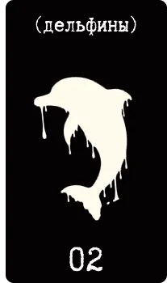
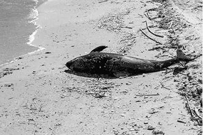
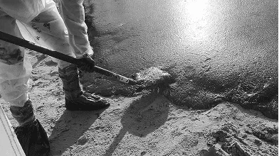

Море молчит, животные — нет
последствия для фауны
Разлив нефти на побережье Анапы стал катастрофой для местных животных. Уже в первые часы после утечки в соцсетях начали появляться фотографии — птицы, покрытые жирной плёнкой, медленно выбрасывающиеся на берег, дельфины, пытающиеся всплыть, но увязшие в нефти. Визуальные материалы документировали серьезные повреждения фауны, подтверждая высокую смертность среди животных.

- ≈8000
- птиц собрали в первые дни
- 121
- удалось стабилизировать
Птицы
Птицы стали самыми первыми жертвами. Согласно оценке волонтёрских групп, принимавших участие в ликвидации последствий, в первые дни после разлива было собрано около 8000 пострадавших птиц. В реабилитационных центрах удалось стабилизировать состояние лишь 121 из них. Большинство погибли ещё до прибытия специалистов.
По словам орнитолога Светланы Смирновой, работающей в пункте спасения птиц в Витязево, причиной высокой смертности стало не только токсичное воздействие мазута, но и отсутствие в России системы экстренной ветеринарной помощи для диких животных.



- 8
- мёртвых особей
- 3
- спасённых
Дельфины
Дельфины пострадали не менее тяжело, хотя их гибель была не столь очевидной в первые дни, как гибель птиц. По данным экологов, было обнаружено восемь мёртвых особей, три спасённых, а более десятка выбросились на берег в течение недели. Причина — острое отравление мазутом через кожу и дыхательные пути. дельфины не могут выйти на сушу, в отличии от птиц, чтобы избавиться от плёнки, и длительное пребывание в загрязнённой воде нарушает их физиологические функции, что значительно увеличивает риск гибели.




Моллюски, планктон и ракообразные
Менее заметной, но не менее критической потерей стала гибель моллюсков, планктона и ракообразных. Экологи предполагают, что значительная часть этих организмов погибла в первые часы после разлива. Массовая гибель запускает цепную реакцию в пищевой цепи: страдают популяции мелких рыб, а затем и более крупные хищники и птицы. Таким образом, разрушение базового уровня экосистемы угрожает её устойчивости и может вызвать долгосрочные изменения в биологическом разнообразии региона.
